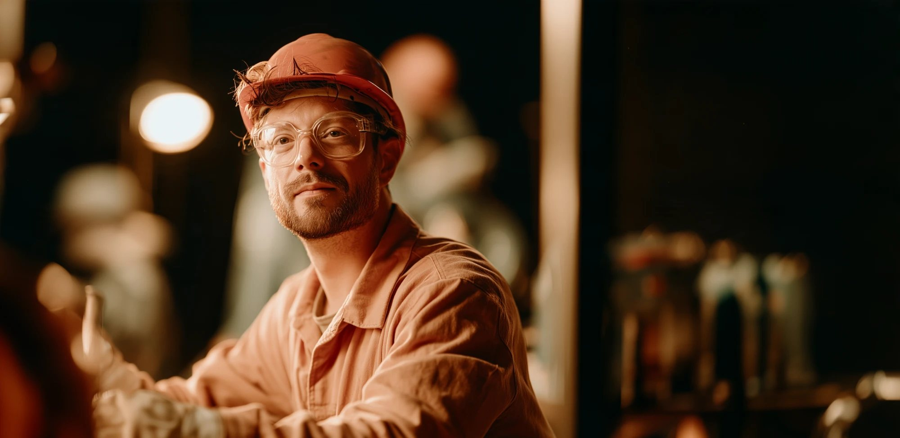
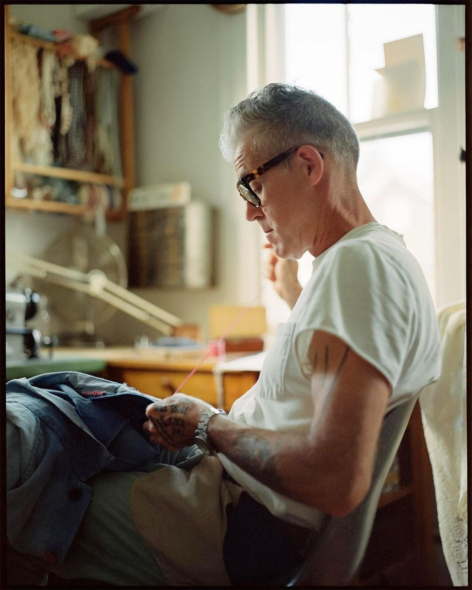
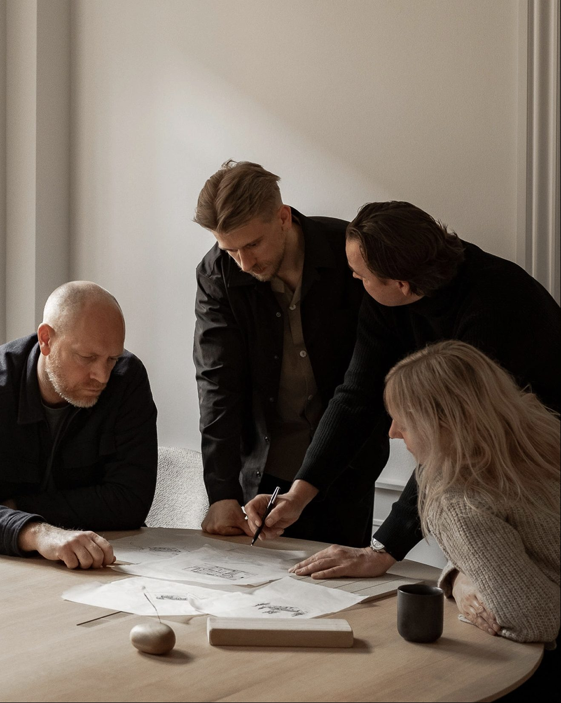

Over the next decade, AI will upend work as we know it. Whole job categories will be eliminated. Others transformed beyond recognition. The disruption will be uneven, radical, and politically explosive.

The people closest to the technology are quietly, seriously worried. The people whose livelihoods are at stake are watching something that feels unstoppable, with no say in what comes next.

Independent of industry and political tribe; pioneering the solutions, building the political will, and co-creating the public vision that AI transformation demands.
We ask the hard questions and stay in the room for the answer. Working at the frontier and bringing the rest of the room along.
Our work & solutionsOur organisation combines deep policy expertise and networks, frontier-AI knowledge, investor fluency and field-building experience, supported by a wealth of personal and organisational experience.
More about usPolicy takes time. If we don’t act now, we will miss the window of opportunity. To invest, collaborate or find out more, get in touch.
Contact usAn action-oriented policy shop — independent of industry, independent of political tribe. We’re pioneering the solutions, building the political will, and co-creating a public vision that AI transformation demands. Company setup & legals
© 2026 The Breakwater Initiative. All rights reserved. An independent, non-partisan policy initiative. Views expressed are those of the authors.